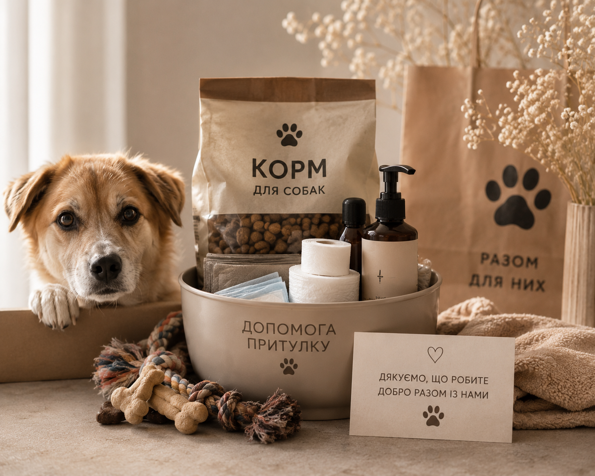
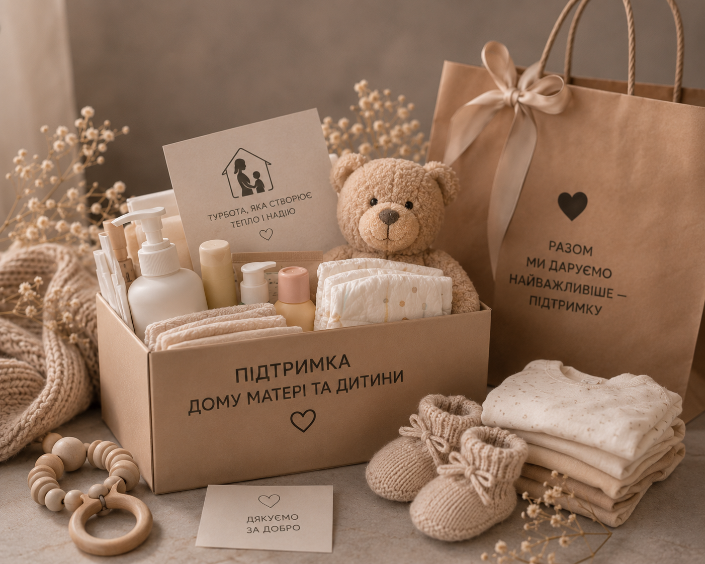
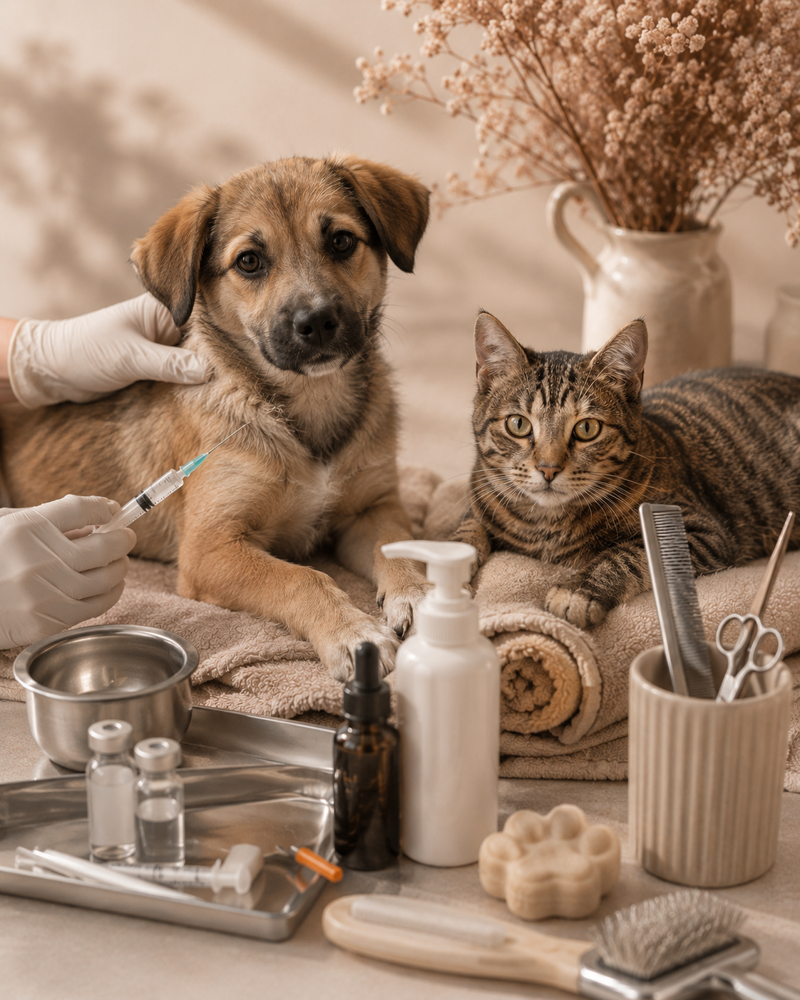
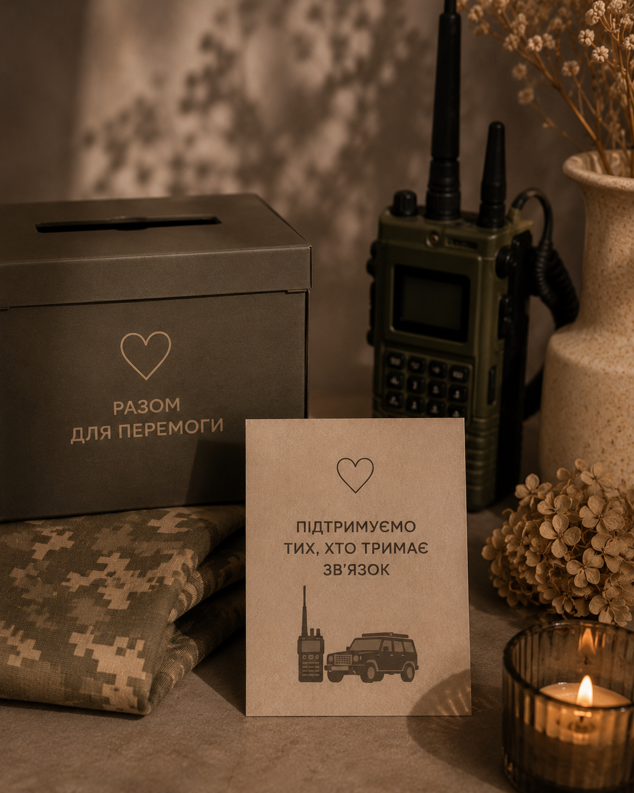
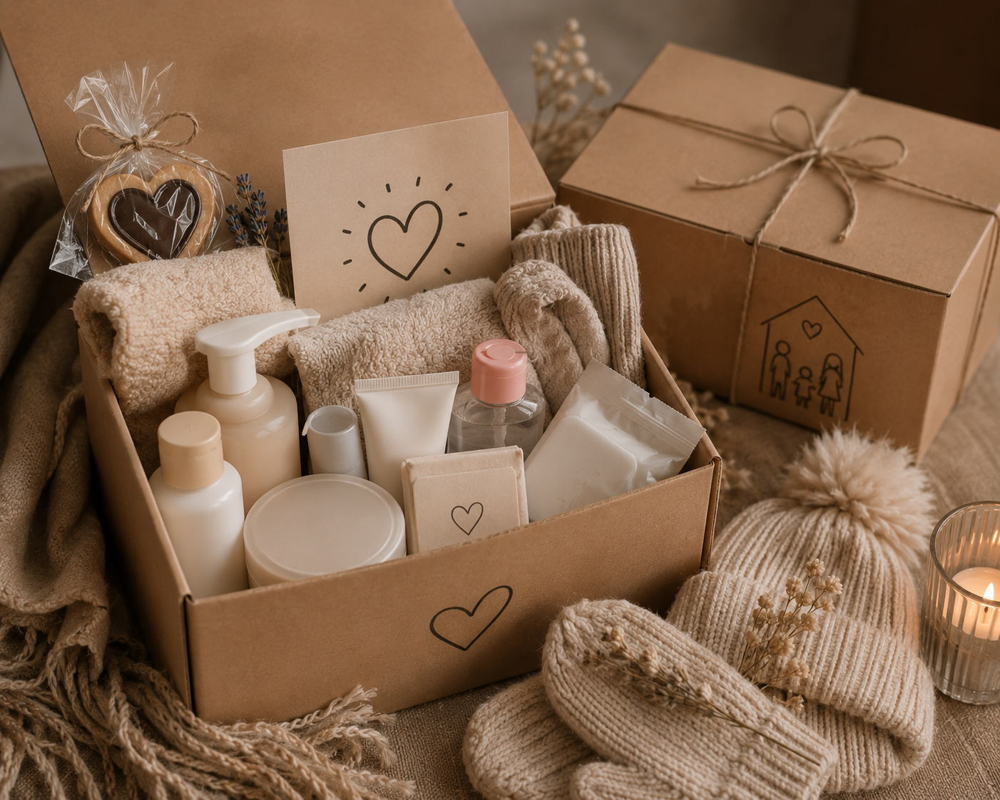
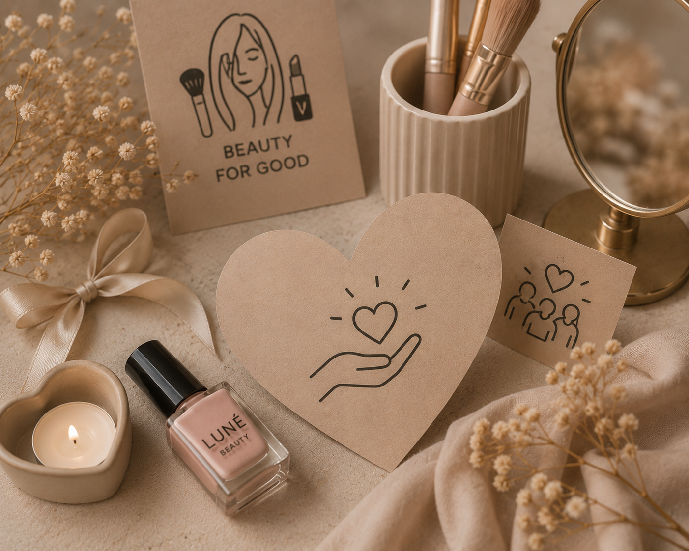
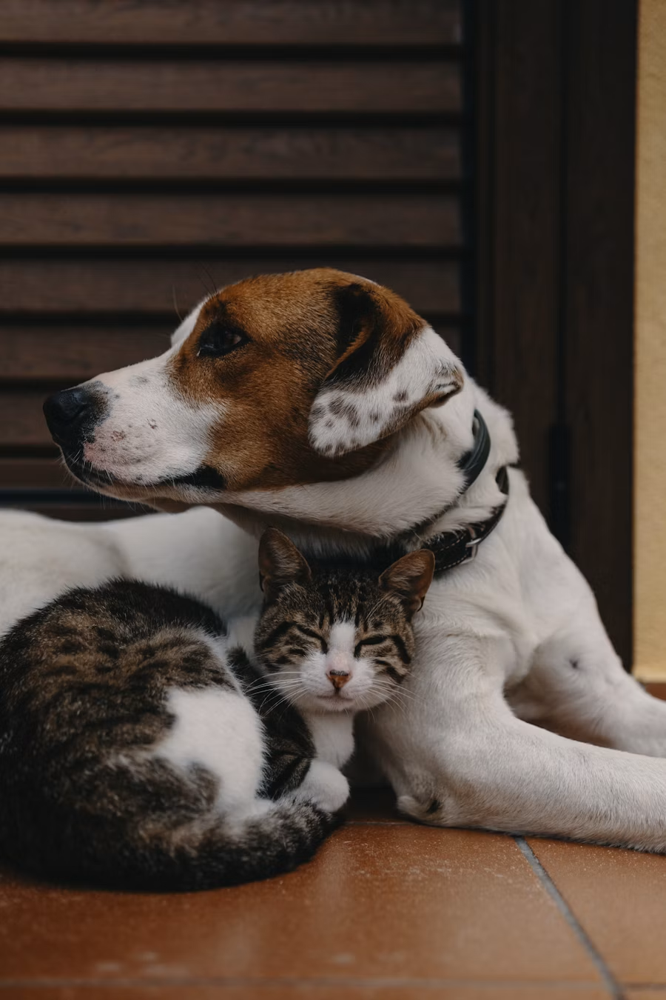
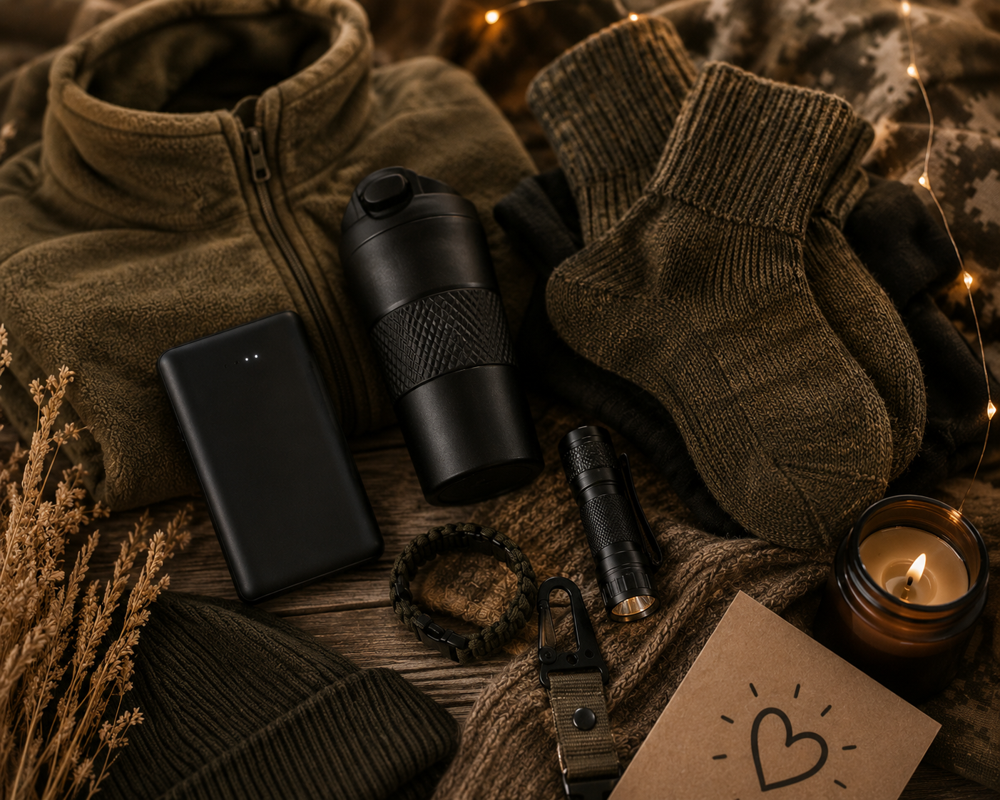

18.05.2026
Корм і допомога в притулку
Команда Luné Beauty разом із клієнтами передала корм, пелюшки та базові засоби догляду для тваринок у місцевому притулку.
ПРОСТІР КРАСИ
Події, ініціативи та невеликі історії допомоги, які ми підтримуємо разом із нашими клієнтами.

Команда Luné Beauty разом із клієнтами передала корм, пелюшки та базові засоби догляду для тваринок у місцевому притулку.

Зібрали пакунки турботи з гігієною, дитячими речами та маленькими подарунками для мам і дітей, яким зараз потрібна підтримка.

Підтримали ініціативу зі щеплення, лікування та базового грумінгу для безпритульних тваринок, щоб допомогти їм швидше знайти дім.

Частину коштів із beauty-дня спрямували на збір для обладнання й позашляховика для військових зв’язківців.

Передали набори гігієни, доглядові засоби та теплі дрібниці для родин, які тимчасово опинилися у складних обставинах.

Провели день краси, де частину записів спрямували на допомогу локальним волонтерським ініціативам.

Підтримали збір на переноски, ліки, корм і тимчасову перетримку для тваринок, яких готують до адопції.

Долучилися до збору на павербанки, термобілизну та необхідні дрібниці для військових у холодний період.
Напишіть нам або зателефонуйте — ми підкажемо актуальні ініціативи, до яких можна долучитися разом із Luné Beauty.
+38 (095) 000-00-00